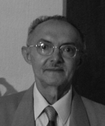

Vagner Maia Leite nasceu em Porto Nacional, fez parte da diretoria da Conorte, desde 1980, onde exerceu cargo de secretário e lutou muito pela causa. Advogado, administrador e juiz de direito no período de 1970 a 1976, quando respondeu pelas Comarcas de Guaraí, Paraíso do Tocantins, Cristalândia, Araguacema e Porto Nacional.
